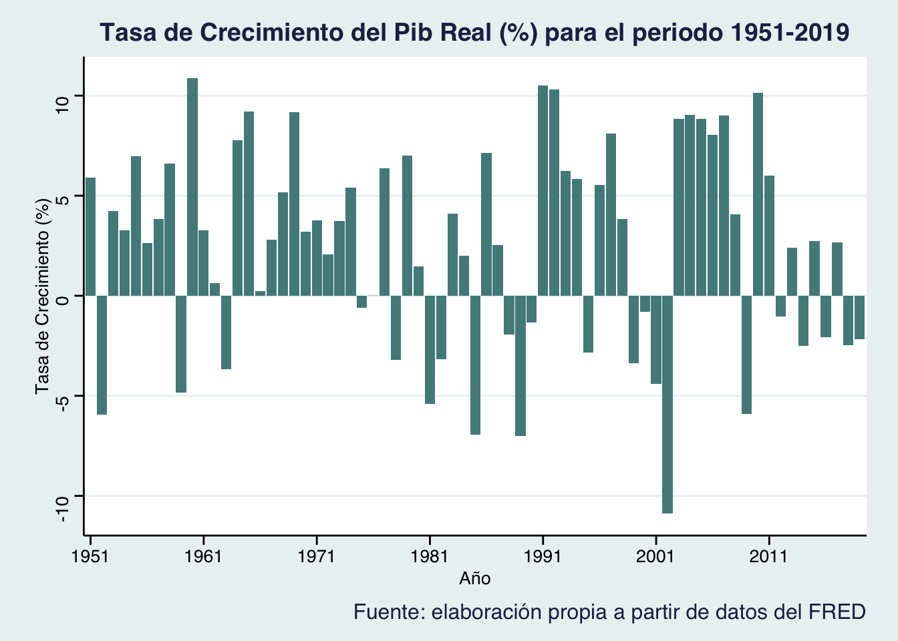

A lo largo del presente trabajo, se realizará un breve análisis de la evolución histórica de las principales variables económicas como el tipo de cambio, el pib real, la pobreza y la deuda del gobierno en Argentina. Se pretende estudiar la vinculación de la crisis actual con el comportamiento de dichas variables o índices.
Los datos del trabajo
Los datos (en formato csv) han sido extraídos de la página web de la Reserva Federal, los cuales se pueden buscar aquí.
Paquetes y códigos
Primero, cargo todos los paquetes que voy a utilizar. Luego, cargo los datos en la memoria de de R/RStudio.
Milei asume a la presidencia en diciembre de 2023 con propuestas para sacar a Argentina de la crisis, como la dolarización.
Dejo un video que explica de forma sintética y clara qué se puede conseguir dolarizando la economía Argentina, que motivos hay detrás del plan y que contradicciones puede tener la propuesta.
Definiciones
En el trabajo se utilizan distintos conceptos económicos, por lo que se expondrá una breve explicación de cada uno con el objetivo de facilitar el entendimiento a los lectores.
En primer lugar, el tipo de cambio indica cuál es el valor o precio de la moneda de un país en términos de otra moneda, en este caso, comparamos a la moneda de Estados Unidos (USD) con la de Argentina (ARS).
En tercer lugar, el Índice de Gini se utiliza para medir la desigualdad entre los habitantes de una población. Para ello, compara los ingresos que reciben las personas como salario.
En cuarto lugar, la deuda bruta representa las obligaciones pendientes del gobierno derivadas de la necesidad de financiar déficits mediante préstamos.
En quinto lugar y último lugar, el PIB Real a Precios Constantes expresa el valor de todos los bienes y servicios producidos en un año determinado, expresado en términos de un periodo base.
Gráficos
Una pequeña introducción interactiva antes de mostrar la evolución histórica de las principales variables e índices económicos.
Tipo de cambio en 2023
En la siguiente tabla se puede buscar el tipo de cambio USD/ARS para cualquier dia del segundo semestre del año 2023. Podemos ver como a medida que pasan los meses incrementa de forma notable, por ejemplo:
10/06/2023 244.967
05/12/2023 362.756
Código
#- Para representar el tipo de cambio en 2023, utilizamos la fuente oanda tc_dolar_peso <-getSymbols(Symbols ='USD/ARS', src ='oanda', auto.assign =FALSE)tc_dp <-as.data.frame(tc_dolar_peso)# Creo una tabla interactiva con DTtabla_1 <-datatable(tc_dp, options =list(pageLength =10, scrollX =TRUE, searching =TRUE, buttons =c('copy', 'csv', 'excel', 'pdf', 'print'), language =list(buttons =list(copy ="Copiar", csv ="Exportar CSV", excel ="Exportar Excel", pdf ="Exportar PDF", print ="Imprimir"))))tabla_1
La evolución del Tipo de Cambio USD/ARS
Código
#- Primero arreglo los datostipo_de_cambio <- tipo_de_cambio %>%slice(469:765) %>% tidyr:::separate.data.frame(., DATE, into =c("year", "month", "date"), sep ="-") %>%rename(tipo_cambio_usars = ARGCCUSMA02STM)tipo_de_cambio <- tipo_de_cambio %>%group_by(year) %>%summarise(media =mean(tipo_cambio_usars)) #- Hago el gráficop1 <-ggplot(tipo_de_cambio, aes(year, media, color ="#79CDCD")) +geom_point(color ="#436EEE") +geom_line( aes(x = year, y = media), color ="black", size =0.5) +labs(y ="Tipo de Cambio USD/ARS", x ="Año") +theme(axis.text =element_text(color ="#104E8B"),axis.text.x =element_text(face ="italic", angle =40, vjust =1, hjust =1)) +theme(plot.subtitle =element_text(size =13,hjust =0.5), plot.caption =element_text(size =14),axis.line =element_line(colour ="black"),axis.ticks =element_line(colour ="royalblue"),panel.grid.major =element_line(colour ="gray98"),panel.grid.minor =element_line(colour ="gray91"),axis.title =element_text(size =10),axis.text =element_text(family ="serif",size =10, face ="italic", colour ="royalblue3",hjust =1.5), axis.text.x =element_text(family ="serif",size =10, colour ="royalblue3"),axis.text.y =element_text(family ="serif",size =10, colour ="royalblue3"),plot.title =element_text(face ="bold",hjust =0.5), panel.background =element_rect(fill ="aliceblue",linetype ="solid"), plot.background =element_rect(fill ="white",linetype ="solid"), legend.position ="bottom",legend.direction ="horizontal") +labs(title ="Evolución del Tipo de Cambio del dólar con respecto al peso argentino (1999-2023)",colour ="Tipo de Cambio USD/ARS", subtitle ="(frecuencia anual, datos no estacionalizados)",caption ="Fuente: Elaboración propia a partir de datos del FRED") +theme(plot.subtitle =element_text(size =10),plot.caption =element_text(size =10)) +theme(plot.title =element_text(size =10))p1 <- p1 +annotate(geom ="text",x=20,y =245,label ="Máximo histórico de 245",size =4)plotly::ggplotly(p1)
Como se puede observar en el primer gráfico, el tipo de cambio dólar peso argentino se ha mantenido relativamente estable hasta el año 2013. A partir de ese entonces, no ha parado de aumentar, devaluándose el peso argentino de forma significativa. Se pueden observar 2 etapas diferenciadas:
Desde 2013 a 2018 el incremento fue paulatino alcanzando una tasa de 25,
Desde 2018 hasta la actualidad, el incremento fue exponencial de más del 200%, hasta alcanzar el máximo histórico de una tasa de 245.
Tenemos que tener en cuenta que como los datos tenían una frecuencia mensual, he calculado el promedio del tipo de cambio por año. Por ejemplo, el último dato se corresponde con Septiembre de 2023, momento en el que 1 dólar valía 349.50 pesos argentinos.
Destacar que el gráfico es interactivo, por lo que pinchando sobre él se puede observar el dato para cada año.
Otra forma de representarlo puede ser de forma animada:
Código
tipo_de_cambio$year <-as.numeric(tipo_de_cambio$year)aa <- tipo_de_cambio %>%ggplot(aes(x = year, y = media, color ="pink")) +labs(title ="Evolución del Tipo de Cambio del dólar con respecto al peso argentino (1999-2023)",x ="Año",y ="Tipo de cambio USD/ARS",color ="Tipo de Cambio") +geom_line(aes(color ="pink"), size=1.5) +theme(plot.title =element_text(size =15, face ="bold",hjust =0.5),axis.title.x =element_text(size =15, hjust =1,vjust =0),axis.title.y =element_text(size =15, hjust =1, vjust =1),legend.title =element_text(face ="bold")) +transition_reveal(year) +view_follow() +theme_bw() +theme(panel.grid.major =element_line(colour ="azure3",linetype ="dashed"), panel.background =element_rect(fill ="honeydew")) +theme(panel.grid.minor =element_line(linetype ="blank"),axis.text =element_text(family ="serif",size =10, colour ="snow4"))animate(aa, width =800, height =500)
Índice de Gini
Código
#- Arreglo los datos y filtro a partir del año 1991indice_gini <- indice_gini %>% tidyr:::separate.data.frame(., DATE, into =c("year", "month", "date"), sep ="-") %>%rename(GINI = SIPOVGINIARG) indice_gini <- indice_gini %>%filter(year >=1991) %>%drop_na() indice_gini <-subset(indice_gini, year !="2015")indice_gini <- indice_gini %>%mutate(GINI =as.numeric(GINI))indice_gini <- indice_gini %>%mutate(year =as.numeric(year))indice_gini$year <-as.numeric(indice_gini$year)str(indice_gini)#> 'data.frame': 30 obs. of 4 variables:#> $ year : num 1991 1992 1993 1994 1995 ...#> $ month: chr "01" "01" "01" "01" ...#> $ date : chr "01" "01" "01" "01" ...#> $ GINI : num 46.8 45.5 44.9 45.9 48.9 49.5 49.1 50.7 49.8 51.1 ...#- Calculo la media y desviación tipica media <-mean(indice_gini$GINI, na.rm =TRUE) desviacion <-sd(indice_gini$GINI, na.rm =TRUE) #- Gráficolibrary(ggplot2)library(gganimate)indice_gini$year <-as.numeric(indice_gini$year)p3 <-ggplot(indice_gini, aes(x = year, y = GINI, label = GINI, group =1)) +geom_point(colour ="maroon") +geom_line() +geom_path(aes(group =1, colour ="maroon")) +# Usar geom_path en lugar de geom_linelabs(title ="Gráfico 1: Índice de Gini para el periodo 1991-2021",caption ="Fuente: elaboración propia a partir de datos del FRED",y ="Índice de Gini",x ="Año") +geom_label_repel() +theme(plot.caption =element_text(size =12),panel.grid.major =element_line(linetype ="blank"),panel.grid.minor =element_line(linetype ="blank"),plot.title =element_text(size =15, face ="bold"),panel.background =element_rect(fill ="lavenderblush")) +scale_x_continuous(breaks =seq(1991, 2021, by =5)) +transition_time(year) +enter_fade() +geom_hline(yintercept =45.97, size =0.5, colour ="purple", linetype ="dashed") animate(p3)
Se puede observar que el Índice de Gini no baja del 40.9, por lo que se concluye que la pobreza es muy alta en Argentina.
No obstante, tras alcanzar el máximo en el año 2002, como consecuencia de la crisis del 2001 (“El Corralito”), se puede observar una continua caída en el porcentaje de pobreza del país, es decir, una mejora con respecto a la pobreza. A partir de ese momento cambia la tendencia creciente (de 1991 al 2002) hacia una tendencia decreciente (del 2002 al 2013). En los últimos años, la pobreza ha variado al alza, pero no de forma significativa.
Además, la línea punteada representa la media, con un valor para el Índice de GINI de 45.97
Pib Real a Precios Constantes
Código
#- Primero arreglo los datospib_real <-read.csv("./datos/realgdp.csv") pib_real <- pib_real %>% tidyr:::separate.data.frame(., DATE, into =c("year", "month", "date"), sep ="-") %>%rename(PIB = RGDPNAARA666NRUG) #- Calculo la tasa de crecimiento año a año en porcentajepib_real <- pib_real %>%mutate(crec_pib_1_anyo = ((PIB -lag(PIB)) /lag(PIB))*100) %>%drop_na()#- Hago el gráficop4 <-ggplot(pib_real, aes(x = year, y = crec_pib_1_anyo)) +geom_bar(fill ="darkslategray4", stat ='identity', position ='dodge') +scale_x_discrete(breaks =seq(1951, 2019, by =10)) +labs(title ="Tasa de Crecimiento del Pib Real (%) para el periodo 1951-2019", caption ="Fuente: elaboración propia a partir de datos del FRED", x ="Año", y ="Tasa de Crecimiento (%)") +theme_stata() +theme(plot.caption =element_text(size =12,hjust =1), plot.title =element_text(size =14,face ="bold"))p4

En el gráfico podemos ver que las mayores caídas del PIB real a precios constantes se dan durante periodos de crisis:
Durante la crisis del 2002
Durante la crisis del 2008
Además, el máximo crecimiento alcanzado fue alrededor del 10% y, del mismo modo, la mayor caída fue también del un valor del 10%.
En la siguiente tabla se pueden observar los 5 años en donde se alcanzó el mayor valor de producción en Argentina para el período que va desde 1951 a 2019:
Código
#- Hago una tabla tabla_top_pib <- pib_real %>%select(year, PIB) %>%arrange(desc(PIB)) %>%head(5)tabla_top_pib <- tabla_top_pib %>%gt() %>%cols_label(year ="Año", PIB ="PIB") %>%cols_width(c(PIB, year) ~px(150)) %>%fmt_number(columns =c(PIB),decimals =0,sep_mark =".") %>%tab_header(title ="Top 5 valores del PIB Argentino",subtitle ="Para el período 1951-2019") %>%tab_source_note(md("Fuente: elaboración propia a partir de datos del [FRED](https://fred.stlouisfed.org)"))tabla_top_pib
Top 5 valores del PIB Argentino
Para el período 1951-2019
Año
PIB
2017
1.022.513
2015
1.017.095
2013
1.015.572
2011
1.002.003
2018
997.137
Fuente: elaboración propia a partir de datos del FRED
La deuda del gobierno
Código
#- Primero arreglo los datosdeuda_gob <-read.csv("./datos/govdebt.csv") deuda_gob <- deuda_gob %>% tidyr:::separate.data.frame(., DATE, into =c("year", "month", "date"), sep ="-") %>%rename(DEUDA = GGGDTAARA188N)deuda_gob <- deuda_gob %>%select(year, DEUDA) %>%filter(year >=2000)deuda_gob <- janitor::clean_names(deuda_gob)names(deuda_gob)#> [1] "year" "deuda"deuda_gob <- deuda_gob %>%mutate(deuda = stringr::str_replace(deuda, "," , "." ))deuda_gob <- deuda_gob %>%mutate(deuda =as.numeric(deuda)) #- Hago el gráficop5 <-plot_ly(deuda_gob, x =~year, y =~deuda, type ="scatter", mode ="lines+markers", name ="Deuda Argentina", marker =list(color ="#7A378B"), line =list(color ="#D15FEE")) %>%layout(title ="Deuda del gobierno de Argentina (2000-2022)",xaxis =list(title ="Año"),yaxis =list(title ="Deuda")) p5
En el gráfico podemos observar la evolución de la deuda del gobierno de Argentina. El máximo de 147.203 se alcanzó durante la crisis del 2002 y luego, la tendencia es decreciente (como consecuencia del impago soberano). No obstante, en los últimos años se observa una nueva subida de la deuda hasta alcanzar un máximo relativo en 2020, como consecuencia de la pandemia, de un 102.79.
Nuevamente un gráfico interactivo, en el que al pinchar sobre el se pueden observar detalladamente los valores de interés.
Conclusión
En conclusión, a lo largo del trabajo se analizó la evolución de las principales variables económicas de Argentina y su impacto sobre el sistema económico. A pesar de que en ciertos momentos se comenzaron a percibir mejoras, desde la crisis de la Covid-19 la economía Argentina se vió afectada en todos los aspectos, especialmente, en el económico y social.
Con esto acabo mi trabajo para BigData!! Gracias por leerme 😃😃😃😃
Información sobre la sesión
Abajo muestro mi entorno de trabajo y paquetes utilizados
---title: "La crisis de Argentina"description: | Una crisis que persiste y parece imposible de superar. Se realizará un análisis económico acerca de la evolución histórica del país.author: - name: Valentina Julieta Arnoletto affiliation: Universitat de València affiliation-url: https://www.uv.esdate: 2022-11-01 categories: [Trabajo BigData, La crisis de Argentina] image: "./imagenes/imagen_01.jpg"title-block-banner: "#87CEFF" #- {true, false, "green","#AA0000"}title-block-banner-color: "#4A708B" toc-depth: 3smooth-scroll: trueformat: html: backgroundcolor: "#FFF5EE" #embed-resources: true link-external-newwindow: true #css: ./assets/my_css_file.css #- CUIDADO!!!!code-tools: truecode-link: true---## Introducción A lo largo del presente trabajo, se realizará un breve análisis de la evolución histórica de las principales variables económicas como el tipo de cambio, el pib real, la pobreza y la deuda del gobierno en Argentina. Se pretende estudiar la vinculación de la crisis actual con el comportamiento de dichas variables o índices.## Los datos del trabajo Los datos (en formato csv) han sido extraídos de la página web de la Reserva Federal, los cuales se pueden buscar [aquí](https://fred.stlouisfed.org){target="_blank"}.## Paquetes y códigos Primero, cargo todos los paquetes que voy a utilizar.Luego, cargo los datos en la memoria de de R/RStudio.```{r}#| code-fold: true#| eval: true# PAQUETES UTILIZADOSlibrary(rio)library(dplyr)library(tidyr)library(tidyverse)library(ggplot2)library(dygraphs)library(xts)library(png)library(plotly)library(ggthemes)library(gt)library(glue)library(countrycode)library(quantmod)library(ggThemeAssist)library(DT)library(vembedr)library(ggthemes)library(ggrepel)library(gganimate)# Primero cargo los datostipo_de_cambio <-read.csv("./datos/tipocambio.csv") pib_real <-read.csv("./datos/realgdp.csv") deuda_gob <-read.csv("./datos/govdebt.csv") indice_gini <-read.csv("./datos/giniindex.csv") ```---## La crisis en una imagen¿Por qué está en crisis la economía de Argentina?```{r}#| echo: falsemy_url <-"https://integralatampost.s3.amazonaws.com/uploads/article/picture/7699/20180526_El-próximo-paso-de-Argentina-_Se-agudizará-la-crisis-o-una-oportunidad-para-emerger-.jpg"```---La última esperanza... Milei asume a la presidencia en diciembre de 2023 con propuestas para sacar a Argentina de la crisis, como la dolarización. Dejo un video que explica de forma sintética y clara qué se puede conseguir dolarizando la economía Argentina, que motivos hay detrás del plan y que contradicciones puede tener la propuesta.```{r, echo = FALSE, out.width = "60%", warning = FALSE}library("vembedr")embed_url("https://www.youtube.com/watch?v=ExIZ4R167p4&t=304s")```::: {.column-margin}{fig-align="center"}:::---## Definiciones En el trabajo se utilizan distintos conceptos económicos, por lo que se expondrá una breve explicación de cada uno con el objetivo de facilitar el entendimiento a los lectores.* En primer lugar, el **tipo de cambio** indica cuál es el valor o precio de la moneda de un país en términos de otra moneda, en este caso, comparamos a la moneda de Estados Unidos (USD) con la de Argentina (ARS).* En tercer lugar, el **Índice de Gini** se utiliza para medir la desigualdad entre los habitantes de una población. Para ello, compara los ingresos que reciben las personas como salario.* En cuarto lugar, la **deuda bruta** representa las obligaciones pendientes del gobierno derivadas de la necesidad de financiar déficits mediante préstamos.* En quinto lugar y último lugar, el **PIB Real a Precios Constantes** expresa el valor de todos los bienes y servicios producidos en un año determinado, expresado en términos de un periodo base.---## GráficosUna pequeña introducción interactiva antes de mostrar la evolución histórica de las principales variables e índices económicos.*Tipo de cambio en 2023*En la siguiente tabla se puede buscar el tipo de cambio USD/ARS para cualquier dia del segundo semestre del año 2023. Podemos ver como a medida que pasan los meses incrementa de forma notable, por ejemplo:- 10/06/2023 244.967- 05/12/2023 362.756```{r}#- Para representar el tipo de cambio en 2023, utilizamos la fuente oanda tc_dolar_peso <-getSymbols(Symbols ='USD/ARS', src ='oanda', auto.assign =FALSE)tc_dp <-as.data.frame(tc_dolar_peso)# Creo una tabla interactiva con DTtabla_1 <-datatable(tc_dp, options =list(pageLength =10, scrollX =TRUE, searching =TRUE, buttons =c('copy', 'csv', 'excel', 'pdf', 'print'), language =list(buttons =list(copy ="Copiar", csv ="Exportar CSV", excel ="Exportar Excel", pdf ="Exportar PDF", print ="Imprimir"))))tabla_1```---### La evolución del Tipo de Cambio USD/ARS```{r}#- Primero arreglo los datostipo_de_cambio <- tipo_de_cambio %>%slice(469:765) %>% tidyr:::separate.data.frame(., DATE, into =c("year", "month", "date"), sep ="-") %>%rename(tipo_cambio_usars = ARGCCUSMA02STM)tipo_de_cambio <- tipo_de_cambio %>%group_by(year) %>%summarise(media =mean(tipo_cambio_usars)) #- Hago el gráficop1 <-ggplot(tipo_de_cambio, aes(year, media, color ="#79CDCD")) +geom_point(color ="#436EEE") +geom_line( aes(x = year, y = media), color ="black", size =0.5) +labs(y ="Tipo de Cambio USD/ARS", x ="Año") +theme(axis.text =element_text(color ="#104E8B"),axis.text.x =element_text(face ="italic", angle =40, vjust =1, hjust =1)) +theme(plot.subtitle =element_text(size =13,hjust =0.5), plot.caption =element_text(size =14),axis.line =element_line(colour ="black"),axis.ticks =element_line(colour ="royalblue"),panel.grid.major =element_line(colour ="gray98"),panel.grid.minor =element_line(colour ="gray91"),axis.title =element_text(size =10),axis.text =element_text(family ="serif",size =10, face ="italic", colour ="royalblue3",hjust =1.5), axis.text.x =element_text(family ="serif",size =10, colour ="royalblue3"),axis.text.y =element_text(family ="serif",size =10, colour ="royalblue3"),plot.title =element_text(face ="bold",hjust =0.5), panel.background =element_rect(fill ="aliceblue",linetype ="solid"), plot.background =element_rect(fill ="white",linetype ="solid"), legend.position ="bottom",legend.direction ="horizontal") +labs(title ="Evolución del Tipo de Cambio del dólar con respecto al peso argentino (1999-2023)",colour ="Tipo de Cambio USD/ARS", subtitle ="(frecuencia anual, datos no estacionalizados)",caption ="Fuente: Elaboración propia a partir de datos del FRED") +theme(plot.subtitle =element_text(size =10),plot.caption =element_text(size =10)) +theme(plot.title =element_text(size =10))p1 <- p1 +annotate(geom ="text",x=20,y =245,label ="Máximo histórico de 245",size =4)plotly::ggplotly(p1)```Como se puede observar en el primer gráfico, el tipo de cambio dólar peso argentino se ha mantenido relativamente estable hasta el año 2013. A partir de ese entonces, no ha parado de aumentar, devaluándose el peso argentino de forma significativa. Se pueden observar 2 etapas diferenciadas: * Desde 2013 a 2018 el incremento fue paulatino alcanzando una tasa de 25,* Desde 2018 hasta la actualidad, el incremento fue exponencial de más del 200%, hasta alcanzar el máximo histórico de una tasa de 245.Tenemos que tener en cuenta que como los datos tenían una frecuencia mensual, he calculado el promedio del tipo de cambio por año. Por ejemplo, el último dato se corresponde con Septiembre de 2023, momento en el que 1 dólar valía 349.50 pesos argentinos. Destacar que el gráfico es interactivo, por lo que pinchando sobre él se puede observar el dato para cada año. Otra forma de representarlo puede ser de forma animada:```{r}tipo_de_cambio$year <-as.numeric(tipo_de_cambio$year)aa <- tipo_de_cambio %>%ggplot(aes(x = year, y = media, color ="pink")) +labs(title ="Evolución del Tipo de Cambio del dólar con respecto al peso argentino (1999-2023)",x ="Año",y ="Tipo de cambio USD/ARS",color ="Tipo de Cambio") +geom_line(aes(color ="pink"), size=1.5) +theme(plot.title =element_text(size =15, face ="bold",hjust =0.5),axis.title.x =element_text(size =15, hjust =1,vjust =0),axis.title.y =element_text(size =15, hjust =1, vjust =1),legend.title =element_text(face ="bold")) +transition_reveal(year) +view_follow() +theme_bw() +theme(panel.grid.major =element_line(colour ="azure3",linetype ="dashed"), panel.background =element_rect(fill ="honeydew")) +theme(panel.grid.minor =element_line(linetype ="blank"),axis.text =element_text(family ="serif",size =10, colour ="snow4"))animate(aa, width =800, height =500)```---### Índice de Gini```{r}#- Arreglo los datos y filtro a partir del año 1991indice_gini <- indice_gini %>% tidyr:::separate.data.frame(., DATE, into =c("year", "month", "date"), sep ="-") %>%rename(GINI = SIPOVGINIARG) indice_gini <- indice_gini %>%filter(year >=1991) %>%drop_na() indice_gini <-subset(indice_gini, year !="2015")indice_gini <- indice_gini %>%mutate(GINI =as.numeric(GINI))indice_gini <- indice_gini %>%mutate(year =as.numeric(year))indice_gini$year <-as.numeric(indice_gini$year)str(indice_gini)#- Calculo la media y desviación tipica media <-mean(indice_gini$GINI, na.rm =TRUE) desviacion <-sd(indice_gini$GINI, na.rm =TRUE) #- Gráficolibrary(ggplot2)library(gganimate)indice_gini$year <-as.numeric(indice_gini$year)p3 <-ggplot(indice_gini, aes(x = year, y = GINI, label = GINI, group =1)) +geom_point(colour ="maroon") +geom_line() +geom_path(aes(group =1, colour ="maroon")) +# Usar geom_path en lugar de geom_linelabs(title ="Gráfico 1: Índice de Gini para el periodo 1991-2021",caption ="Fuente: elaboración propia a partir de datos del FRED",y ="Índice de Gini",x ="Año") +geom_label_repel() +theme(plot.caption =element_text(size =12),panel.grid.major =element_line(linetype ="blank"),panel.grid.minor =element_line(linetype ="blank"),plot.title =element_text(size =15, face ="bold"),panel.background =element_rect(fill ="lavenderblush")) +scale_x_continuous(breaks =seq(1991, 2021, by =5)) +transition_time(year) +enter_fade() +geom_hline(yintercept =45.97, size =0.5, colour ="purple", linetype ="dashed") animate(p3)```Se puede observar que el **Índice de Gini no baja del 40.9**, por lo que se concluye que la pobreza es muy alta en Argentina.No obstante, tras alcanzar el **máximo en el año 2002**, como consecuencia de la crisis del 2001 ("El Corralito"), se puede observar una continua caída en el porcentaje de pobreza del país, es decir, una mejora con respecto a la pobreza. A partir de ese momento cambia la tendencia creciente (de 1991 al 2002) hacia una **tendencia decreciente** (del 2002 al 2013). En los últimos años, la pobreza ha variado al alza, pero no de forma significativa. Además, la línea punteada representa la media, con un valor para el Índice de GINI de 45.97---### Pib Real a Precios Constantes```{r}#- Primero arreglo los datospib_real <-read.csv("./datos/realgdp.csv") pib_real <- pib_real %>% tidyr:::separate.data.frame(., DATE, into =c("year", "month", "date"), sep ="-") %>%rename(PIB = RGDPNAARA666NRUG) #- Calculo la tasa de crecimiento año a año en porcentajepib_real <- pib_real %>%mutate(crec_pib_1_anyo = ((PIB -lag(PIB)) /lag(PIB))*100) %>%drop_na()#- Hago el gráficop4 <-ggplot(pib_real, aes(x = year, y = crec_pib_1_anyo)) +geom_bar(fill ="darkslategray4", stat ='identity', position ='dodge') +scale_x_discrete(breaks =seq(1951, 2019, by =10)) +labs(title ="Tasa de Crecimiento del Pib Real (%) para el periodo 1951-2019", caption ="Fuente: elaboración propia a partir de datos del FRED", x ="Año", y ="Tasa de Crecimiento (%)") +theme_stata() +theme(plot.caption =element_text(size =12,hjust =1), plot.title =element_text(size =14,face ="bold"))p4```En el gráfico podemos ver que las mayores caídas del PIB real a precios constantes se dan durante periodos de crisis:- Durante la crisis del 2002- Durante la crisis del 2008Además, el máximo crecimiento alcanzado fue alrededor del 10% y, del mismo modo, la mayor caída fue también del un valor del 10%. En la siguiente tabla se pueden observar los 5 años en donde se alcanzó el mayor valor de producción en Argentina para el período que va desde 1951 a 2019:```{r}#- Hago una tabla tabla_top_pib <- pib_real %>%select(year, PIB) %>%arrange(desc(PIB)) %>%head(5)tabla_top_pib <- tabla_top_pib %>%gt() %>%cols_label(year ="Año", PIB ="PIB") %>%cols_width(c(PIB, year) ~px(150)) %>%fmt_number(columns =c(PIB),decimals =0,sep_mark =".") %>%tab_header(title ="Top 5 valores del PIB Argentino",subtitle ="Para el período 1951-2019") %>%tab_source_note(md("Fuente: elaboración propia a partir de datos del [FRED](https://fred.stlouisfed.org)"))tabla_top_pib```---### La deuda del gobierno```{r}#- Primero arreglo los datosdeuda_gob <-read.csv("./datos/govdebt.csv") deuda_gob <- deuda_gob %>% tidyr:::separate.data.frame(., DATE, into =c("year", "month", "date"), sep ="-") %>%rename(DEUDA = GGGDTAARA188N)deuda_gob <- deuda_gob %>%select(year, DEUDA) %>%filter(year >=2000)deuda_gob <- janitor::clean_names(deuda_gob)names(deuda_gob)deuda_gob <- deuda_gob %>%mutate(deuda = stringr::str_replace(deuda, "," , "." ))deuda_gob <- deuda_gob %>%mutate(deuda =as.numeric(deuda)) #- Hago el gráficop5 <-plot_ly(deuda_gob, x =~year, y =~deuda, type ="scatter", mode ="lines+markers", name ="Deuda Argentina", marker =list(color ="#7A378B"), line =list(color ="#D15FEE")) %>%layout(title ="Deuda del gobierno de Argentina (2000-2022)",xaxis =list(title ="Año"),yaxis =list(title ="Deuda")) p5```En el gráfico podemos observar la evolución de la deuda del gobierno de Argentina. El máximo de 147.203 se alcanzó durante la crisis del 2002 y luego, la tendencia es decreciente (como consecuencia del impago soberano). No obstante, en los últimos años se observa una nueva subida de la deuda hasta alcanzar un máximo relativo en 2020, como consecuencia de la pandemia, de un 102.79.Nuevamente un gráfico interactivo, en el que al pinchar sobre el se pueden observar detalladamente los valores de interés. ---## ConclusiónEn conclusión, a lo largo del trabajo se analizó la evolución de las principales variables económicas de Argentina y su impacto sobre el sistema económico. A pesar de que en ciertos momentos se comenzaron a percibir mejoras, desde la crisis de la Covid-19 la economía Argentina se vió afectada en todos los aspectos, especialmente, en el económico y social. <br>Con esto acabo mi trabajo para BigData!! Gracias por leerme 😃😃😃😃<br>----------------------<br>## Información sobre la sesiónAbajo muestro mi entorno de trabajo y paquetes utilizados```{r}#| echo: falsesessioninfo::session_info() %>% details::details(summary ='current session info') ```